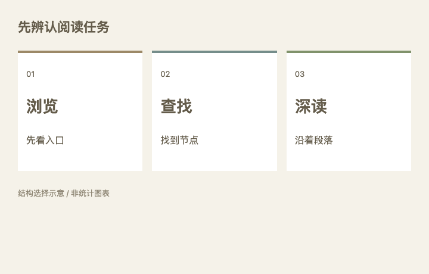

研究笔记 / 排版中的选择
三种阅读任务，
三种信息结构。
摘 要
浏览、查找和深读，对信息层级有不同要求。文章的结构应先回应阅读任务，再确定装饰方式。
1 先辨认阅读任务
读者想快速判断是否值得看，还是要找到某个步骤？一篇需要连续理解的长文，又需要怎样的段落节奏？

图 1 / 阅读任务与结构选择
2 把结构与任务对应起来
表 1 阅读任务与排版重点
| 阅读任务 | 优先处理 |
|---|---|
| 浏览 | 标题、摘要与首图 |
| 查找 | 目录、步骤与编号 |
| 深读 | 段落、章节与图注 |
三者并不互斥1。一篇长文章也可以先提供摘要，再进入连续叙述；教程也可以保留简短的原理说明。
结构应先回应阅读任务，再确定装饰方式。
— 出处：本页设计方法归纳
取舍原则
用一个明确的层级，
替代几处重复的强调。
1 本页分类为设计方法示例，不是实验结论或统计数据。